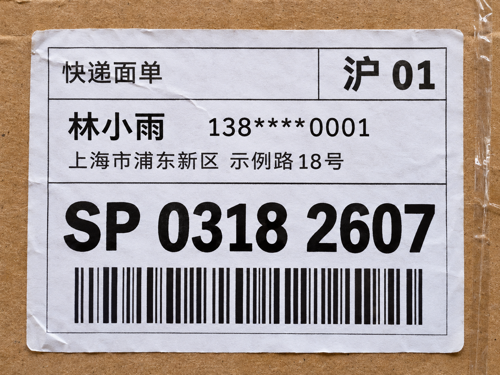

周五，设计评审。
会议室 302
把新方案带上。
拾贴 · Mac 的随手备忘录
会议室 302
把新方案带上。
上海市浦东新区
示例路18号2单元301
设计参考
example.com/design
复制之外，还有本地 AI
朋友陆续发来的收货信息，选中后一起整理，省去逐条摘抄。
| 收件人 | 详细地址 | 备注 |
|---|---|---|
| 林小雨 | 上海市浦东新区 示例路18号2单元301 |
周末送到，我在家 |
| 周可可 | 深圳市南山区 示例路9号 |
到了放前台就行 |
随手截下 · 按需识字
拍下快递面单，框选运单号，一键提取文字。
图片里的信息，也能直接复制使用。
 快递面单.jpg照片预览
快递面单.jpg照片预览